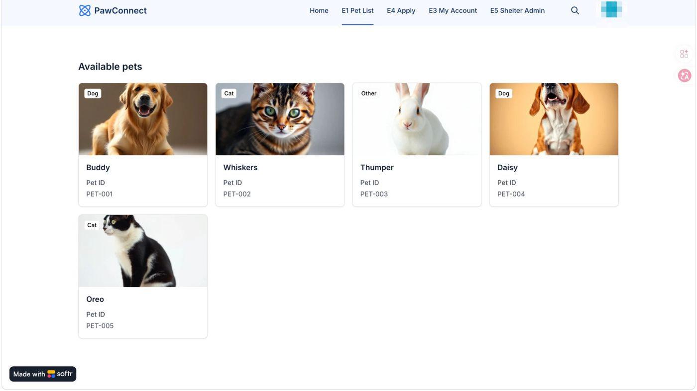
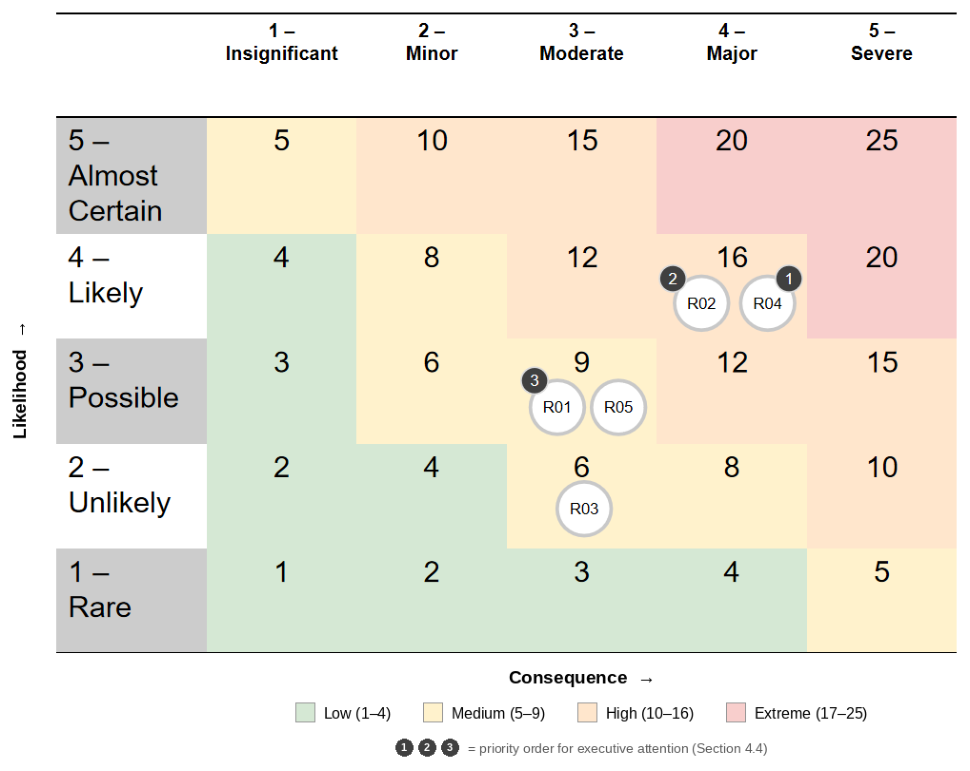

孙祥Xiang Sun
项目管理 / PMO 作品集Project Management / PMO Portfolio
悉尼大学项目管理硕士在读 · 土木工程本科Master of Project Management student, University of Sydney · BEng Civil Engineering
我关注项目如何从计划走到交付。在课程项目中，用 MS Project 跟踪进度与成本，用 Jira 拆解需求、记录测试与验收；在建设单位实习中，参与招标文件编制、合同资料核对和工作事项跟进。
I focus on moving projects from planning to delivery. My coursework uses Microsoft Project for schedule and cost tracking, and Jira for requirements, testing and acceptance. My owner-side internships involved tender documents, contract records and task follow-up.
求职意向 · 项目管理 / PMO 实习Seeking project management / PMO internships
国内为主 · 同时考虑澳洲机会Primarily China · also open to opportunities in Australia
寒假可全职实习 · 2026 年 11 月底 – 2027 年 2 月Available full-time · late Nov 2026 – Feb 2027
代表作品Selected work
计划、交付与风险判断Planning, delivery and risk judgement

项目计划与状态汇报Planning & status reporting
NexusOne
银行核心系统迁移 · 课程模拟Core-banking migration · course simulation
个人完成挣值分析和两页状态仪表盘，识别进度、成本和跨项目依赖问题，提出需要指导委员会决策的事项。Independently produced earned-value analysis and a two-page dashboard covering schedule, cost, dependencies and decisions for the steering committee.
159 项任务基线 · 7 个里程碑159-task baseline · 7 milestones
查看仪表盘与分析 →View dashboard & analysis →
需求拆解与迭代交付Requirements & iterative delivery
PawConnect
领养平台原型 · 团队课程项目Adoption prototype · team coursework
负责宠物浏览与筛选，编写带验收标准的用户故事，交付 3 个故事、9 个故事点；参与跨模块测试与缺陷复测。Owned pet browsing and filters, wrote acceptance criteria and delivered 3 stories worth 9 points. Tested cross-feature flows and retested defects.
个人交付 3 个故事 · 9 个故事点My delivery · 3 stories · 9 points
查看交付与测试记录 →View delivery & testing →
风险判断与优先级Risk evaluation & priorities
Ryde Hospital
医院改扩建 · 团队案例分析Hospital redevelopment · team case analysis
负责风险评价章节，为 5 项风险制定分级与排序依据，解释同为 16 分的风险为什么需要不同的管理优先级。Wrote the risk evaluation, applied criteria to 5 risks and explained why two risks scoring 16 require different management priorities.
5 项风险 · 分级准则与管理建议5 risks · criteria & recommendations
查看风险评价 →View risk evaluation →实习经历Experience
经营管理部 实习生Intern, Business Management Department
中能建（无锡）城市建设发展有限公司China Energy Engineering (CEEC) Wuxi Urban Construction Development Co., Ltd.
- 招标采购：协助 40GWh 储能电池项目招标采购；为运河文化园二期检测鉴定服务编制招标计划，起草招标文件 4 份
- 合同管理：协助审核运河文化园一期 A 区施工总承包合同；跟进安全监测服务合同从起草、谈判到签订
- 造价结算：整理 630kVA 临时箱变工程结算及变更索赔资料；协助堤防航道项目的施工图预算审核、投资确认及竣工结算审计
- 风险管理：协助识别储能项目重大风险，汇总应对措施
- Procurement: supported tendering for a 40 GWh/year battery plant; drafted the procurement plan and four tender documents for inspection services
- Contracts: assisted the review of a main construction contract; followed a services contract from drafting through negotiation to signing
- Cost & audit: compiled final-account and variation-claim records for a 630 kVA substation package; assisted budget review and final-account audit for a levee project
- Risk: helped identify major risks and response measures for the battery plant
实习生（兼职）Part-time Intern
中能建（无锡）投资发展有限公司CEEC Wuxi Investment Development Co., Ltd.
- 文件核对 · 核对招投标文件的文字、标点与前后版本差异，协助合同文件下发。
- 会议支持 · 整理会议纪要，记录讨论内容和工作安排。
- 事务跟进 · 维护日常管理表格，记录待办事项、经办人员及签字流转情况。
- Document checks · Checked tender wording, punctuation and differences between versions, and supported contract-document distribution.
- Meeting support · Prepared meeting minutes documenting discussions and work arrangements.
- Administrative tracking · Maintained daily records of pending tasks, staff responsible and signature routing.
更多项目More projects
Project Greenfield：880 万澳元社区体育馆的成本、质量与资源计划Project Greenfield: cost, quality and resource plans for a AUD 8.8m pavilion
按风险量化定不可预见费（50 万，覆盖期望损失的 120%），编出逐月预算和 S 曲线，写明挣值控制阈值；合稿时发现排程里施工期内部监督人员为零，补上人员计划和资源直方图。
Set contingency from quantified risk (AUD 500k, 120% of EMV), built a monthly budget and S-curve with earned-value thresholds, and at merge found zero in-house supervision during construction, then added a staffing plan and histogram.
查看三章计划 →See the plans →Snowy 2.0：大型项目的相关方沟通为什么失效Snowy 2.0: why stakeholder communication broke down
澳大利亚在建最大可再生能源项目，预算从 61 亿涨到 120 亿澳元。我拿公司 2019 年自己写下的沟通承诺做尺子，沿 2017–2026 年的时间线逐条核对，论证沟通在获批后就断档了，并提出持续情绪监测和咨询闭环两条建议。
Australia's largest renewable project, with its budget rising from AUD 6.1bn to 12bn. I used the company's own 2019 engagement promises as the yardstick, traced them through 2017–2026, showed engagement stalled after approval, and proposed continuous sentiment monitoring and a closed consultation loop.
阅读分析与原文 →Read the analysis →Inland Rail：重建社区信任的沟通实施方案Inland Rail: an implementation plan for rebuilding community trust
把沟通策略落到执行：先对齐事实、私下先告知受影响的土地所有者、再公开倾听、每次会后公布「你们说了，我们做了」；每个关切都有负责人和 48 小时升级时限。
Turned the strategy into execution: align facts, tell affected landholders privately first, then listen publicly and publish "you said, we did" after each session; every concern has an owner and a 48-hour escalation clock.
查看两页方案 →See the slides →南京地铁 5 号线云南路站：24.75 m 深基坑支护设计Nanjing Metro Line 5: support design for a 24.75 m deep excavation
地下三层换乘站。独立完成从方案比选到出图的整套设计：钻孔灌注桩加旋喷止水，设冠梁加四层内支撑共五道支撑；土压力、嵌固深度、配筋、整体稳定、抗倾覆、抗隆起全部手算，再用理正电算互相校核，并给出降水和监测方案。
A three-level interchange station. I completed the full design from option selection to drawings: bored piles with jet-grout cut-off and five strut levels. Earth pressure, embedment, reinforcement and stability checks were hand-calculated and cross-checked in Lizheng software, with dewatering and monitoring plans.
查看设计过程、图纸与计算结果 →See the design →工业废渣改良膨胀土：动三轴试验研究Expansive soil stabilised with industrial waste: dynamic triaxial tests
作为负责人制定试验方案（矿渣与粉煤灰 3:7，围压 120、150、180 kPa 三档），带领三人团队完成配土、击实、养护和动三轴试验，分析循环荷载下滞回曲线的变化，主笔结题报告。
As lead I designed the test programme (slag to fly ash 3:7; confining pressures of 120, 150 and 180 kPa), led a team of three through sample preparation, curing and dynamic triaxial testing, analysed hysteresis under cyclic loading, and was main author of the final report.
查看试验过程与结果 →See the tests →技能Skills
方法Methods
WBS · 关键路径 · 成本基线 · 敏捷/Scrum · ISO 31000WBS · critical path · cost baselines · Agile/Scrum · ISO 31000工程Engineering
AutoCAD · 广联达 · 理正深基坑AutoCAD · Glodon · Lizheng语言Languages
普通话（母语）· 英语（全英文硕士在读）Mandarin (native) · English (master’s coursework and presentations)教育Education
悉尼大学 · 项目管理硕士The University of Sydney · Master of Project Management
全英文授课：项目启动、项目计划、项目执行与验收、项目经济与采购、战略风险管理Project Initiation; Project Planning; Execution and Acceptance; Economics and Procurement; Strategic Risk Management
三江学院 · 土木工程本科Sanjiang University · BEng Civil Engineering
GPA 3.33/5.0，专业前 5%；一等、二等奖学金，优秀学生干部；班长、学习委员、读书会副会长GPA 3.33/5.0, top 5%; First- and Second-Class Scholarships; Outstanding Student Leader; Class President